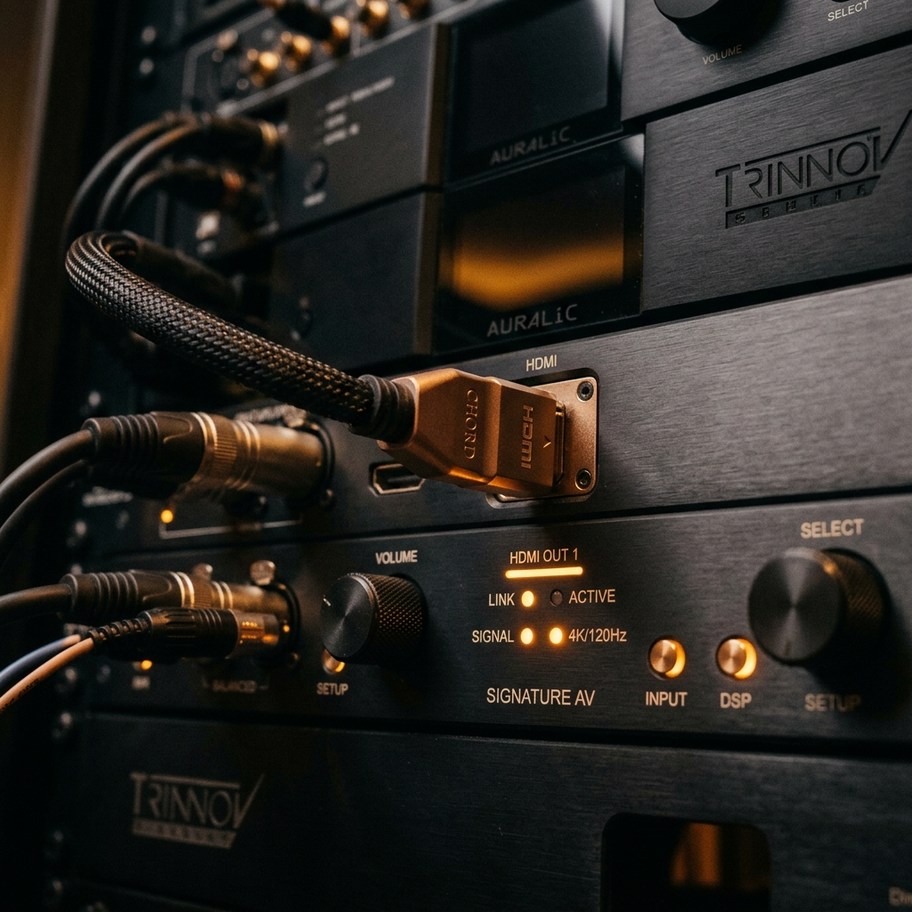
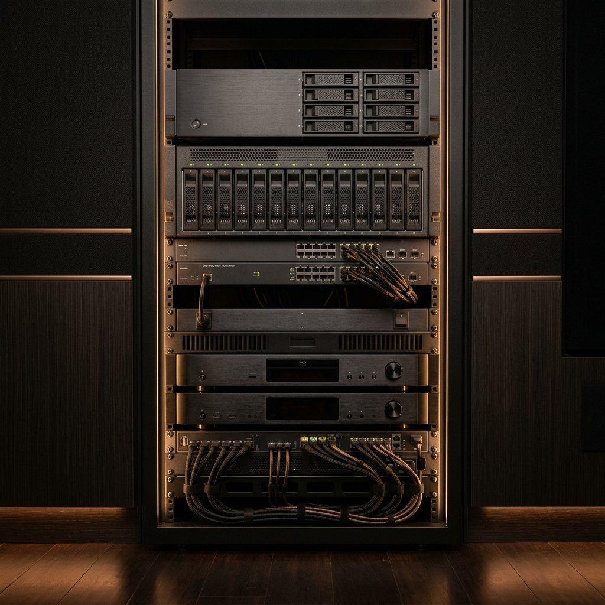
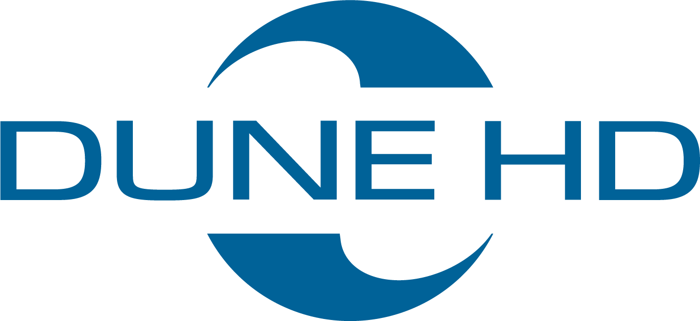
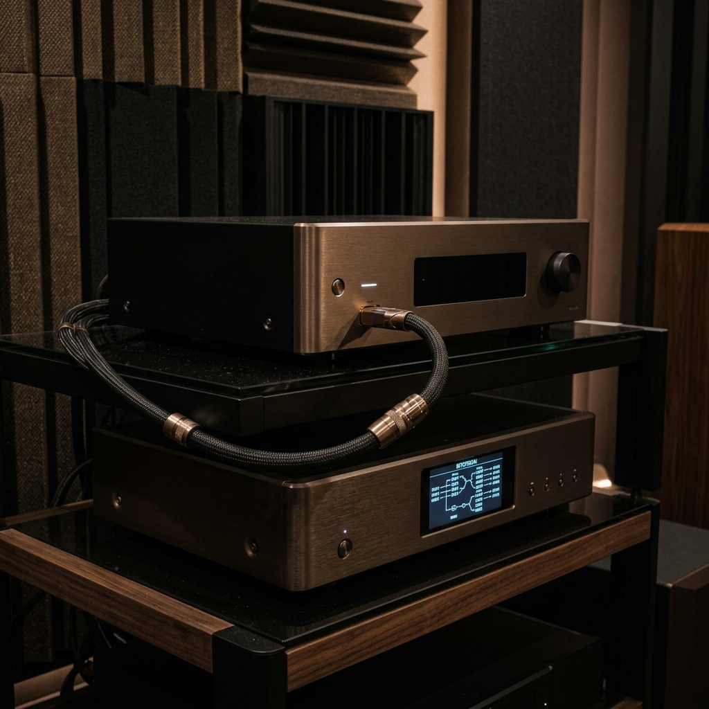
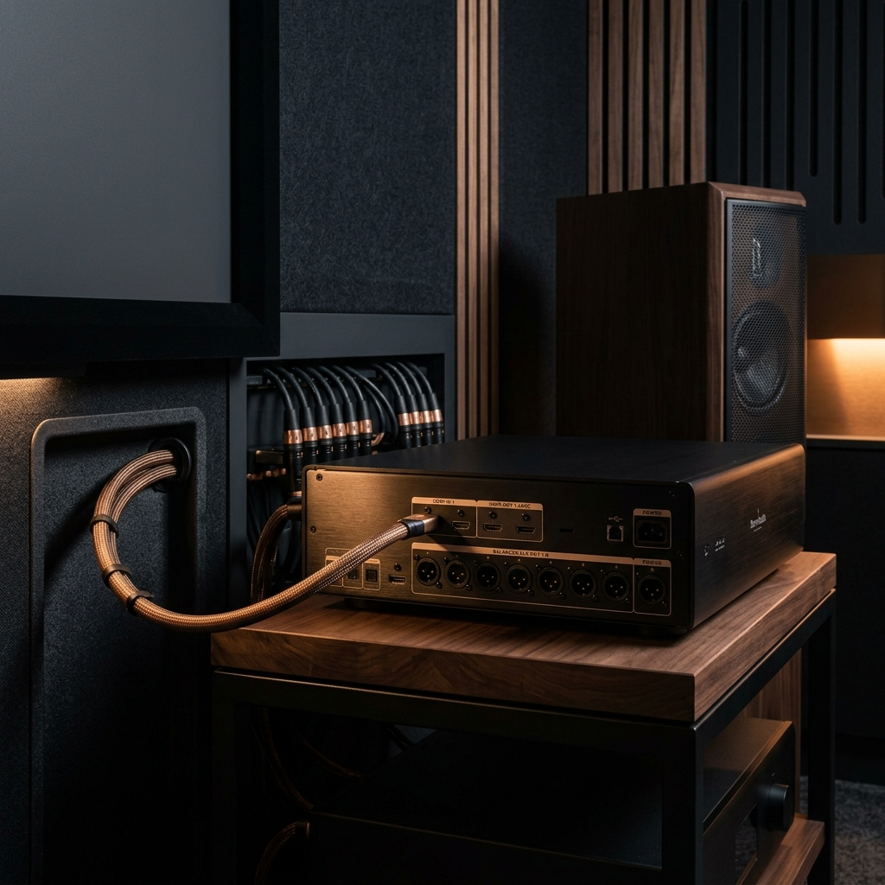

Five specialised service areas. Each addresses a distinct layer of your cinema system — because every link matters.

A disorganised media library is the most common — and most overlooked — barrier to a premium playback experience. Wrong metadata, mismatched file names, missing artwork, incorrect chapter markers, and broken links all degrade the experience before a single frame plays.
Cinema Machina builds structured, fully resolved libraries across Plex, Jellyfin, Kodi, and NAS environments — with exhibition-quality metadata, custom artwork, and a folder logic that scales cleanly.
A library that opens clean, loads instantly, displays correctly, and scales without breaking as your collection grows.
Every playback device has a native capability ceiling — and most are never configured to reach it. The same Zidoo or Nvidia Shield set up by different hands will perform very differently in practice.
Cinema Machina configures each device to unlock its full capability for your specific signal chain — correct output resolution, frame rate, HDR format, audio codec routing, and client application behaviour.

Your device performing exactly as its engineering intended — every time, for every file format in your library.
The path between your source and your display is where most luxury systems fail silently. HDMI negotiation errors, incorrect colour space declarations, missing EDID handshakes, and audio extraction failures are invisible to most users — until we show them what they've been missing.
We trace the complete signal path — source device, processor, switch, display, and speakers — and verify each link. Where there are compromises, we resolve them systematically.
A signal chain where every link is verified, every handshake confirmed, and every format reaches your processor and display intact.

Stuttering. Frame drops. Audio sync drift. HDR mapping that looks wrong. Codec failures that silently fall back to downmixed stereo. These are common problems in luxury cinema systems — and they're rarely visible without the right tools.
Cinema Machina provides structured diagnostic sessions that isolate the source of playback issues — whether they originate in the media file, the playback software, the device firmware, or the signal chain.
A clean playback baseline — with documentation of what was found, what was fixed, and what to monitor going forward.

This is the final, most nuanced layer. Beyond setup and configuration, there are decisions that separate a good system from a truly exceptional one. How your projector tone-maps Dolby Vision. How your device handles 23.976 vs 24Hz. Whether your HDR metadata is being honoured or overridden.
Cinema Machina builds custom playback profiles for your system — calibrated to your content, your room, and your processor — then verifies against a reference library to confirm the result.
A cinema system that performs with intention — where every creative decision by the filmmakers reaches the screen exactly as it should.
Book a private consultation and we'll assess your current setup, identify the most important interventions, and propose a clear engagement plan.